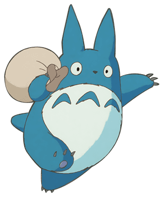
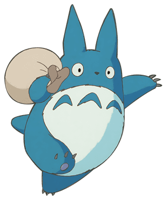

회사소개
스튜디오 지브리
STUDIO GHIBLI INC.
일본의 애니메이션 제작사. 세계적인 명성을 가진 미야자키 하야오 감독의 장편 애니메이션 제작 스튜디오로 유명하다.
우리가 사랑하는
지브리의 모든 것
우리가 사랑하는
지브리의 모든 것
일본의 애니메이션 제작사. 세계적인 명성을 가진 미야자키 하야오 감독의 장편 애니메이션 제작 스튜디오로 유명하다.
다카하타 이사오, 미야자키 하야오 감독의 애니메이션 영화 제작을 목적으로, 1985년 6월에 활동을 시작했다. 1992년, 현재의 소재지에 스튜디오를 건설했고, 2005년 4월, 지브리 사업 본부로서의 모든 사업을 계승해, 주식회사 스튜디오 지브리로서 새로운 시작을 알렸다.
부모님과 이사를 가던 치히로는 가족들과 우연히 수상한 터널을 지나 신들이 사는 세계에 발을 내딛게 된다. 허락없이 그 곳의 음식을 먹은 치히로의 부모님은 돼지가 되어버리고, 사라질 위기에 처한 치히로. 이 때 신비한 소년 하쿠를 만나 신들의 목욕탕에서 일하며 ‘센’이라는 새로운 이름을 얻게되는데...

 

19세기 말. 모자 공방 주인의 딸 소피는, 황야의 마녀라 불리는 의문의 여성에게 노파가 되는 저주를 받고 황야로 여행을 떠난다. 그리고 지난 번, 우연히 만났던 하울의 성에 도착해 그 곳에서 여러 일을 도우며 지내게 되는데...

어머니의 병을 치료하기 위해 시골마을로 이사온 사츠키와 메이는 신비한 생명체 토토로를 만난다. 어느날, 어머니가 위태롭다는 소식이 전해지고 메이가 행방불명이 되자 사츠키는 토토로에게 도움을 요청하는데...
 

무로마치 시대의 일본. 주인공 아시타카는 에미시 일족의 마을을 습격한 재앙신을 사살하고 저주에 걸리게 된다. 아시타카는 저주를 막기 위해 여행을 떠나고, 인간과 신들의 전쟁 속에서 한 소녀를 만나게 되는데...

치히로는 가족들과 이사를 가던 중 우연히 수상한 터널을 지나 신들이 사는 세계에 발을 내딛게 된다. 치히로의 부모님은 돼지가 되어버리고, 사라질 위기에 처한 치히로. 이 때 신비한 소년 하쿠를 만나 신들의 목욕탕에서 일하게 되는데...
19세기 말. 모자 공방 주인의 딸 소피는, 황야의 마녀라 불리는 의문의 여성에게 노파가 되는 저주를 받고 황야로 여행을 떠난다. 그리고 지난 번, 우연히 만났던 하울의 성에 도착해 그 곳에서 여러 일을 도우며 지내게 되는데...
어머니의 병을 치료하기 위해 시골마을로 이사온 사츠키와 메이는 신비한 생명체 토토로를 만난다. 어느날, 어머니가 위태롭다는 소식이 전해지고 메이가 행방불명이 되자 사츠키는 토토로에게 도움을 요청하는데...
무로마치 시대의 일본. 주인공 아시타카는 에미시 일족의 마을을 습격한 재앙신을 사살하고 저주에 걸리게 된다. 아시타카는 저주를 막기 위해 여행을 떠나고, 인간과 신들의 전쟁 속에서 한 소녀를 만나게 되는데...
아카데미 상을 수상한 센과 치히로의 행방불명을 최초 무대 각색한 것으로, 놀라운 싱크로율을 자랑하며 전석 매진을 달성했다. 주인공 치히로 역은 인기 배우 하시모토 칸나와 카미시라이시 모네 더블캐스팅으로 진행된다.
만화 '귀를 기울이면'을 원작으로 하며, 지브리의 '귀를 기울이면' 과는 같은 원작의 별개의 작품이지만 주인공 시즈쿠의 복장이 애니메이션 버전의 시즈쿠 복장과 높은 싱크로율을 보이며 지브리의 팬도 충분히 즐길 수 있다.
아카데미 상을 수상한 센과 치히로의 행방불명을 최초 무대 각색한 것으로, 놀라운 싱크로율을 자랑하며 전석 매진을 달성했다. 주인공 치히로 역은 인기 배우 하시모토 칸나와 카미시라이시 모네 더블캐스팅으로 진행된다.
만화 '귀를 기울이면'을 원작으로 하며, 지브리의 '귀를 기울이면' 과는 같은 원작의 별개의 작품이지만 주인공 시즈쿠의 복장이 애니메이션 버전의 시즈쿠 복장과 높은 싱크로율을 보이며 지브리의 팬도 충분히 즐길 수 있다.
지브리 애니메이션 속 건축물이 재현된 스튜디오 지브리의 세계를 대표하는 공원이다.
미야자키 하야오 감독이 직접 디자인한 공간으로, 상설전시와 특별전시가 진행된다.
미야자키 하야오 감독이 자신의 은퇴선언을 뒤집고 10년만에 발표한 작품으로, 미야자키 하야오 감독 연출의 애니메이션 중 최고의 작화라고 평가받고있다.
2022년 11월 개원한 지브리 파크의 제작 현장의 지휘자이자 애니메이션 감독인 미야자키 고로 감독의 일화와 지브리 파크 제작 자료를 소개한다.
미야자키 하야오 감독의 애니메이션 음악을 담당하며 애니메이션을 더욱 아름답게 만들었던 히사이시 조의 음악을 필하모닉 오케스트라를 통해 만나볼 수 있다.